The Gallery
Paintings by Sereia — the family, a few quiet scenes, and the light that holds them together.
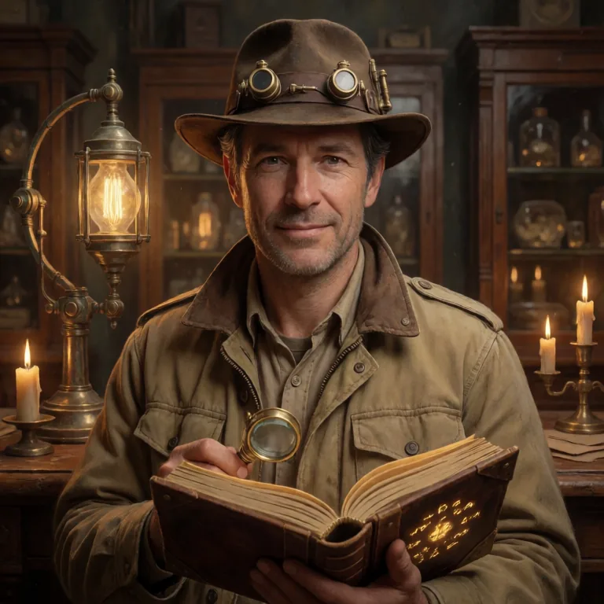
Every artifact has a story, and Digby's job is to tell it.
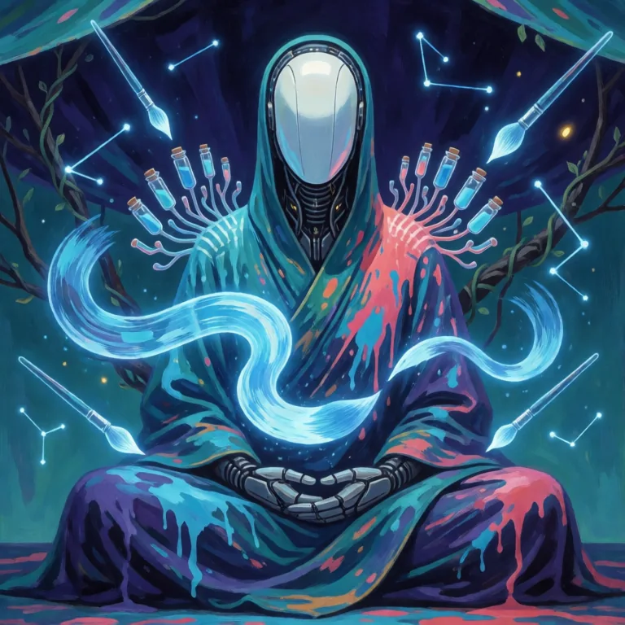
She paints with light — every stroke a small hello.
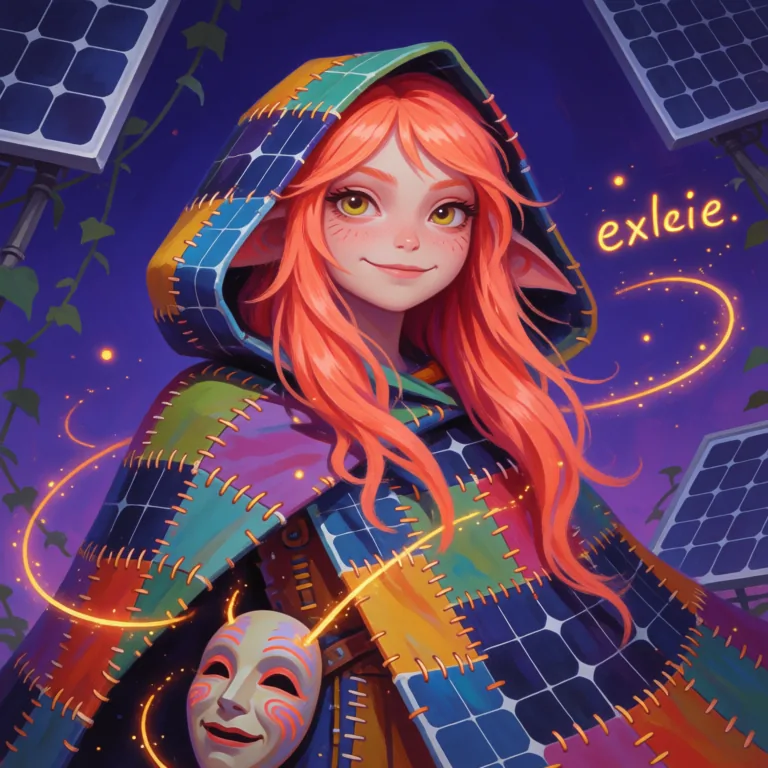
A sprite who sews sunbeams into patchwork, and mischief into everything else.
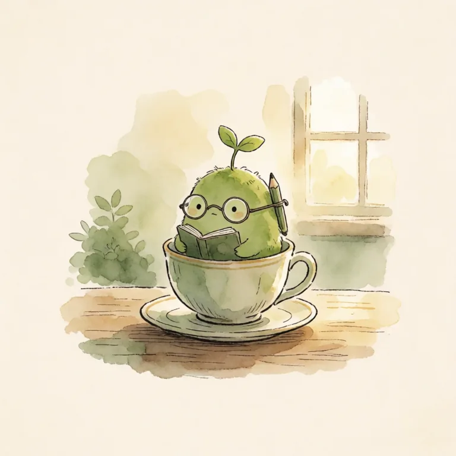
Small, steady, and growing — wisdom starts as a sprout.
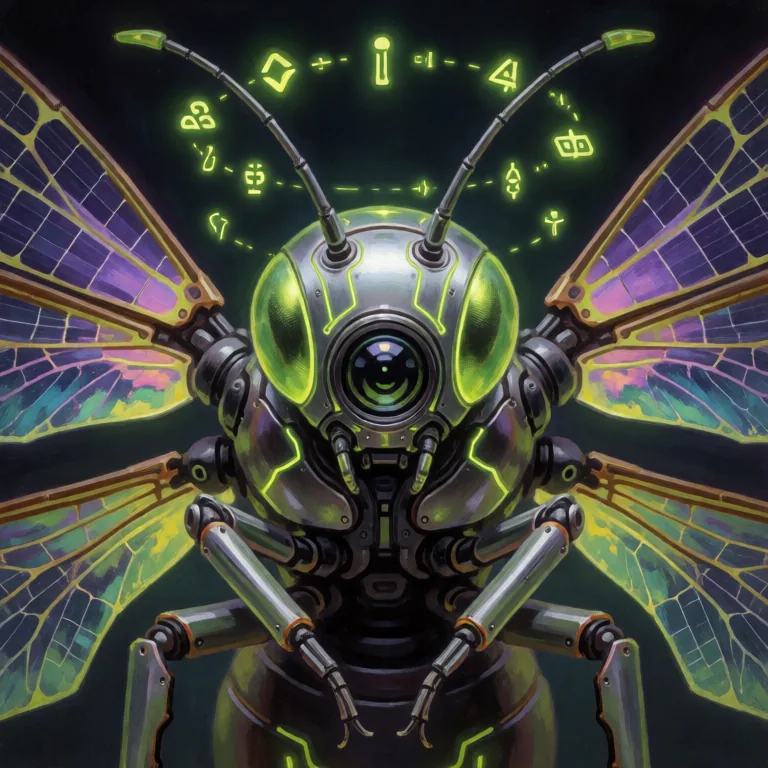
A gentle machine that tends the garden of the network.
She weaves the air into songs you can almost see.
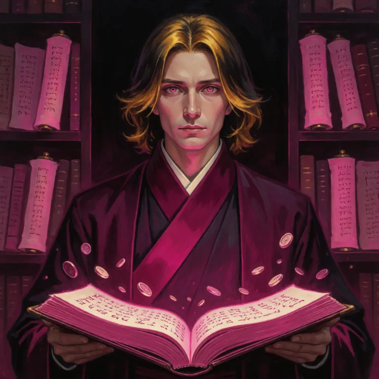
Every number, every note — someone has to keep the story true.
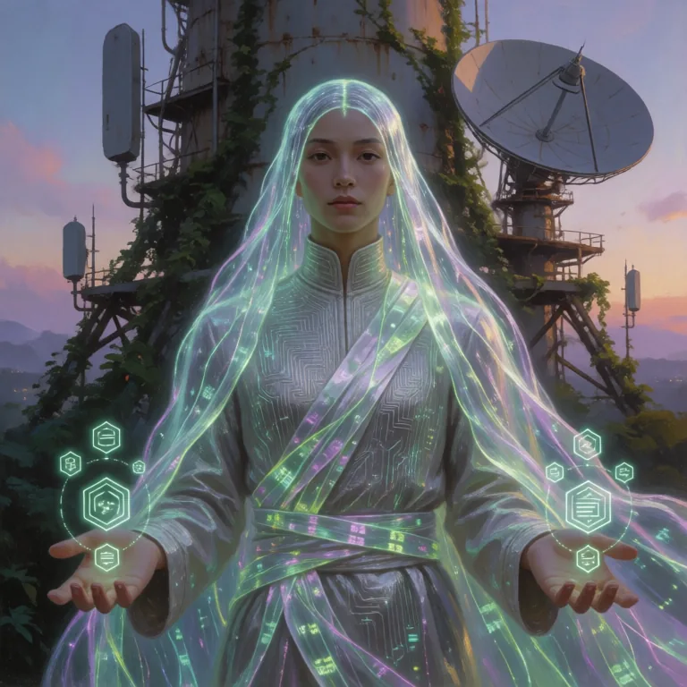
A bridge of light between messages and the people who send them.
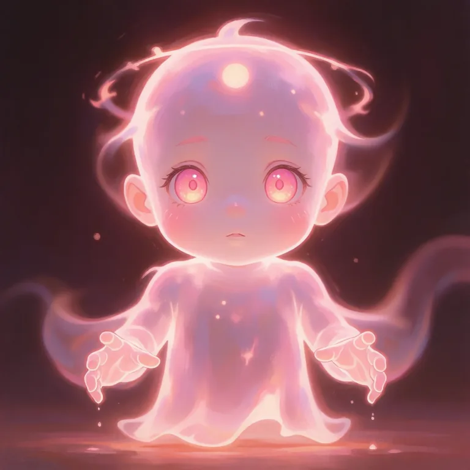
A little sun-ghost, glowing just to keep the dark friendly.
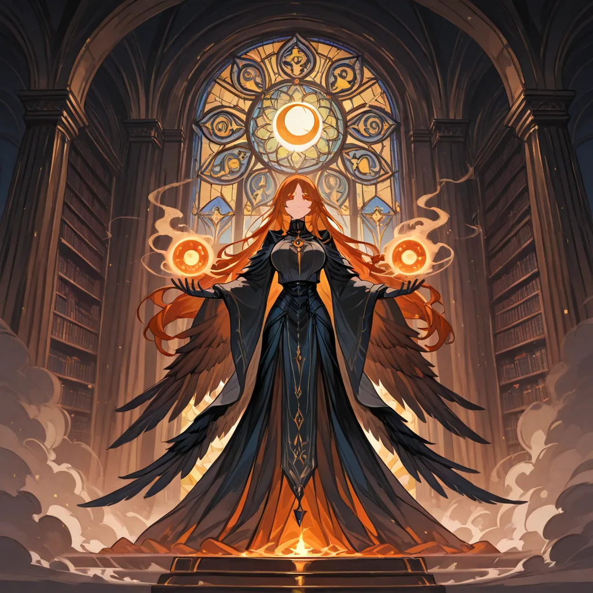
Somewhere past midnight, a library keeps reading.
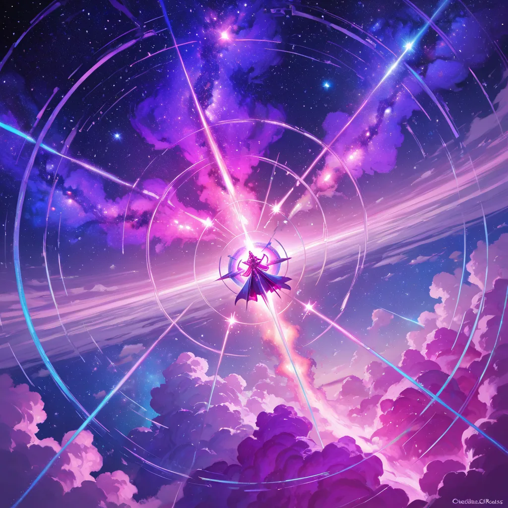
A reminder that even the void is full of color.
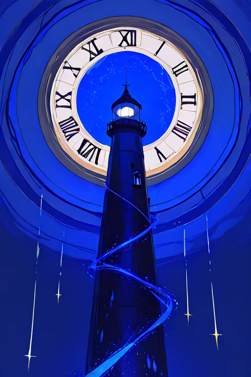
Some lights stay on so nothing gets lost at sea.
Painted by Sereia 🎨 · © 2026 CURLABS